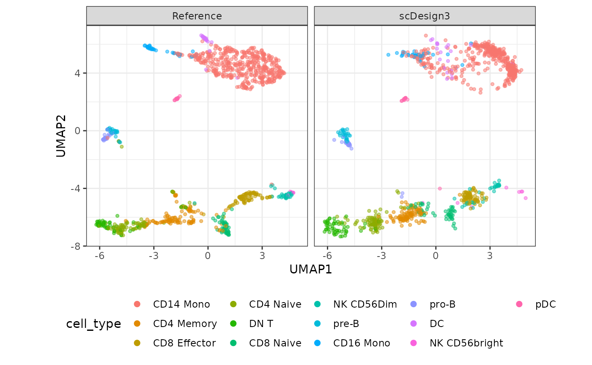

Simulate single-cell ATAC-seq data
Dongyuan Song
Bioinformatics IDP, University of California, Los Angelesdongyuansong@ucla.edu
Guanao Yan
Department of Statistics, University of California, Los Angelesgayan@g.ucla.edu
Qingyang Wang
Department of Statistics, University of California, Los Angelesqw802@g.ucla.edu
27 March 2023
Source:../../scDesign3/code/vignettes/scDesign3-scATACseq-vignette.Rmd
scDesign3-scATACseq-vignette.RmdIntroduction
In this tutorial, we show how to use scDesign3 to simulate the peak by cell matrix of scATAC-seq data.
Read in the reference data
The raw data is from the Signac, which is of human peripheral blood mononuclear cells (PBMCs) provided by 10x Genomics. We pre-select the differentially accessible peaks between clusters.
example_sce <- readRDS((url("https://www.dropbox.com/s/e75uf5k5voni106/ATAC_sce.rds?raw=1")))
print(example_sce)
#> class: SingleCellExperiment
#> dim: 1133 7034
#> metadata(0):
#> assays(2): counts logcounts
#> rownames(1133): chr6-44025105-44028184 chr2-113581628-113594911 ...
#> chr2-233174300-233175622 chr3-13015237-13015864
#> rowData names(0):
#> colnames(7034): AAACGAAAGAGCGAAA-1 AAACGAAAGAGTTTGA-1 ...
#> TTTGTGTTCTACTTTG-1 TTTGTGTTCTTGTGCC-1
#> colData names(31): orig.ident nCount_peaks ... ident cell_type
#> reducedDimNames(2): LSI UMAP
#> mainExpName: peaks
#> altExpNames(0):To save time, we subset 1000 cells.
Simulation
Here we choose the Zero-inflated Poisson (ZIP) as the distribution due to its good empirical performance. Users may explore other distributions (Poisson, NB, ZINB) since there is no conclusion on the best distribution of ATAC-seq.
set.seed(123)
example_simu <- scdesign3(
sce = example_sce,
assay_use = "counts",
celltype = "cell_type",
pseudotime = NULL,
spatial = NULL,
other_covariates = NULL,
mu_formula = "cell_type",
sigma_formula = "1",
family_use = "zip",
n_cores = 2,
usebam = FALSE,
corr_formula = "cell_type",
copula = "gaussian",
DT = TRUE,
pseudo_obs = FALSE,
return_model = FALSE,
nonzerovar = FALSE
)We also run the TF-IDF transformation.
tf_idf <- function(Y){
frequences <- colSums(Y)
nfreqs <- t(apply(Y, 1, function(x){x/frequences}))
nfreqs[is.na(nfreqs)] <- 0
idf <- log(1 + ncol(Y)) - log(rowSums(Y > 0) + 1) + 1
Y_idf <- apply(nfreqs, 2, function(x){x * idf})
return(Y_idf)
}
assay(example_sce, "tfidf") <- as.matrix(tf_idf(counts(example_sce)))
simu_sce <- example_sce
counts(simu_sce) <- example_simu$new_count
assay(simu_sce, "tfidf") <- as.matrix(tf_idf(counts(simu_sce)))Visualization
compare_figure <- plot_reduceddim(ref_sce = example_sce,
sce_list = list(simu_sce),
name_vec = c("Reference", "scDesign3"),
assay_use = "tfidf",
if_plot = TRUE,
color_by = "cell_type",
n_pc = 20)
plot(compare_figure$p_umap)